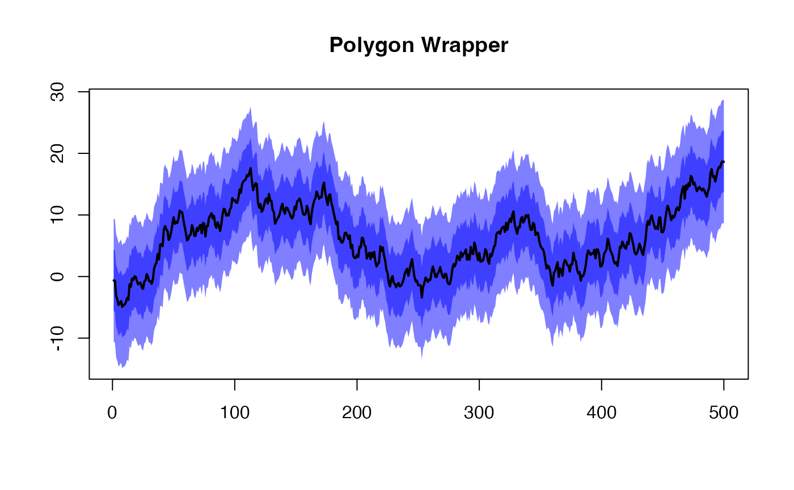

Plot a shaded area (interval) along a line via a polygon.
Typically for shading a confidence interval about a line.
This is just a convenient wrapper that makes more sense of the
polygon() function.
Arguments
- upper
A list of length 2 containing the sequential
(x, y)values for the upper bound, where:entry 1 contains a vector of x-values,
entry 2 contains a vector of y-values.
- lower
A list of length 2 containing the sequential
(x, y)values for the lower bound, where:entry 1 contains a vector of x-values,
entry 2 contains a vector of y-values.
- add
Logical. Should the shaded area (polygon) be added to an existing plot?
- col
Color for the shaded area.
- ...
Additional arguments passed to the
plot()function. Typically for arguments like:main,xlab,ylim, etc.
Functions
addPolygon(): A convenient wrapper for adding a polygon to an existing plot which simply hard codes theadd = TRUEargument and passes additional arguments toplotPolygon().
Examples
poly_data <- withr::with_seed(1, rnorm(1))
for ( i in 2:500 ) poly_data[i] <- poly_data[i - 1] + rnorm(1)
plotPolygon(list(1:length(poly_data), poly_data + 10),
list(1:length(poly_data), poly_data - 10),
xlab = "", ylab = "", main = "Polygon Wrapper")
addPolygon(list(1:length(poly_data), poly_data + 5),
list(1:length(poly_data), poly_data - 5))
lines(poly_data, lwd = 2)

# A full test wrapper (a simulation of genetic drift)
polywrap <- function(filename = NULL, seed = 1000) {
figure(filename, width = 960, scale = 1.1)
on.exit(close_figure(filename))
poly_data <- withr::with_seed(seed, rnorm(1)) # initiate random
for ( i in 2:500 ) {
poly_data[i] <- poly_data[i - 1] + rnorm(1)
}
plotPolygon(list(1:length(poly_data), poly_data + 10),
list(1:length(poly_data), poly_data - 10),
xlab = "", ylab = "", main = "Polygon Wrapper")
addPolygon(list(1:length(poly_data), poly_data + 5),
list(1:length(poly_data), poly_data - 5),
col = ggplot2::alpha("red", 0.5))
lines(poly_data, lwd = 2)
}
if ( interactive() ) {
file <- tempfile("polygon-", fileext = ".png")
polywrap(file)
}